Ce que couvre cet arsenal
Cette page recense l’intégralité des armes publiées par l’export communautaire du jeu, relevé le 18 novembre 2026. Le catalogue n’est pas une sélection éditoriale : ce sont les cent quatre-vingt-dix-neuf armes que le jeu connaît, réparties en neuf familles de jeu et un catalogue de pièces. Les mesures citées sont celles de la configuration de base de chaque objet ; elles changent dès qu’une pièce est montée, et le guide le signale à chaque tableau de presets.
199
Armes. Du 9 x 18 au 12,7 x 99, du couteau de poche à la labrys de 19 kg. Les familles suivent les catégories d’objets du jeu, pas un classement de force.
3
Profils de jeu. PvP Zone, PvE Zone et PvP Season exposent le même catalogue à cette date : aucun écart de contenu n’a été relevé entre les trois.
401
Presets. Configurations publiées avec leurs propres mesures d’ergonomie, de recul et de précision, dont le preset par défaut de chaque arme.
Ce que cet arsenal ne dit pas. Les prix marchands et les niveaux de fidélité sont les valeurs de l’instantané, pas des prix garantis ni une preuve de disponibilité. Les compatibilités pièce par pièce ne figurent pas dans l’export : elles se vérifient dans le client, sur l’arme concernée. Les dégâts affichés dans les tableaux de munitions sont ceux de la cartouche seule, avant tout effet de distance, de canon ou d’armure.
Les dix familles
Chaque famille a sa fiche, avec le catalogue complet, les presets publiés et les conditions d’accès. Les effectifs viennent du même instantané que le catalogue : ils ne sont pas arrondis.
Fusils d’assaut et carabines
Soixante-trois fusils d’assaut et carabines de l’export : M4A1, AK-74N, SA-58, AUG A3 et MDR, filtrés par recul, ergonomie et munitions autorisées.
Pistolets-mitrailleurs (SMG)
Vingt-trois pistolets-mitrailleurs du catalogue public : MP5, MP7, Vector, UMP et P90, classés par cadence, calibre et disponibilité marchande.
Fusils à pompe et semi-automatiques
Seize fusils à pompe et semi-automatiques : MP-133, Saiga-12K, Remington 870, Benelli M3, avec plombs, slugs et le coût réel du sac de plombs.
Fusils de précision à verrou
Dix fusils de précision à verrou : SV-98, Model 700, Mosin, DVL-10, AXMC et Sako TRG M10, avec distance efficace et coût de l’optique.
Fusils de précision semi-auto (DMR)
Onze DMR du catalogue : SR-25, SVDS, G28, RSASS, Vintorez et M1A, avec la cadence semi-automatique qui change tout à moyenne distance.
Mitrailleuses légères et polyvalentes
Huit mitrailleuses légères du catalogue : RPK-16, PKM, PKP, RPD, RPDN, M60E4, M60E6 et sa variante FDE, avec poids et cadence.
Pistolets et revolvers
Trente et une armes de poing : Makarov, Glock 19X, USP, Five-seveN, SR-1MP, Chiappa Rhino et revolvers, avec leurs calibres et leurs prix.
Armes de mêlée
Vingt-sept armes de mêlée : baïonnettes, couteaux, machettes, haches, tomahawks et glaives, avec dégâts de taille et de pointe, et leur usage en jeu.
Lance-grenades et lanceurs spéciaux
Dix armes classées en lanceurs : FN40GL Mk2, RShG-2, ZiD SP-81 et les fusées ROP-30 et RSP-30, avec leurs munitions et leurs prix.
Modifications et accessoires
Deux mille deux cent quatre-vingt-trois pièces d’arme classées par emplacement : crosse, garde-main, rail, canon, chargeur, optique, cache-flamme et lunette.
Le catalogue filtrable
Les cent quatre-vingt-dix-neuf armes, avec leurs mesures à configuration de base. Les filtres ci-dessous agissent sur le tableau ; sans JavaScript, le tableau reste complet et lisible.
199 armes affichées sur 199
Les mesures affichées sont celles de l’arme nue. Un preset modifie l’ergonomie, le recul et la précision : le tableau des presets de chaque fiche de famille donne ces valeurs mesurées.
| Image | Arme | Calibre | Ergonomie | Recul vertical | Recul horizontal | Cadence (c/min) | Distance efficace (m) | Modes de tir | Munitions | Presets |
|---|---|---|---|---|---|---|---|---|---|---|
 | Baïonnette 6Kh5 | Sans munition | None | None | None | None | None | — | 0 | 0 |
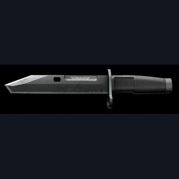 | Baïonnette ER FULCRUM | Sans munition | None | None | None | None | None | — | 0 | 0 |
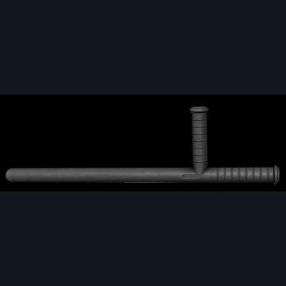 | Bâton de police PR-Taran | Sans munition | None | None | None | None | None | — | 0 | 0 |
 | Couteau Bars A-2607 95Kh18 | Sans munition | None | None | None | None | None | — | 0 | 0 |
 | Couteau Bars A-2607 Damas | Sans munition | None | None | None | None | None | — | 0 | 0 |
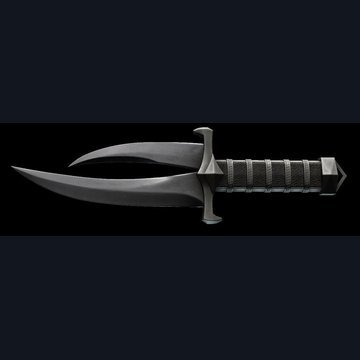 | Couteau de cultiste | Sans munition | None | None | None | None | None | — | 0 | 0 |
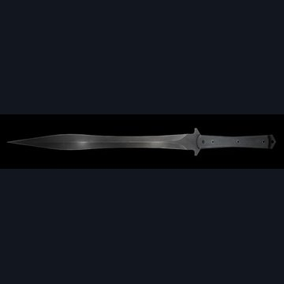 | Glaive tactique APOK Wasteland | Sans munition | None | None | None | None | None | — | 0 | 0 |
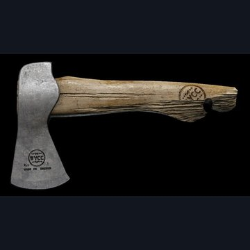 | Hache antique | Sans munition | None | None | None | None | None | — | 0 | 0 |
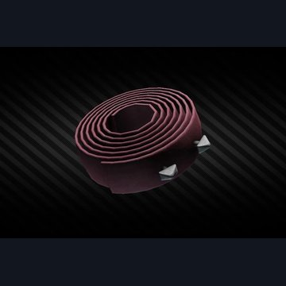 | Hache de secours | Sans munition | None | None | None | None | None | — | 0 | 0 |
 | Hachette de camping | Sans munition | None | None | None | None | None | — | 0 | 0 |
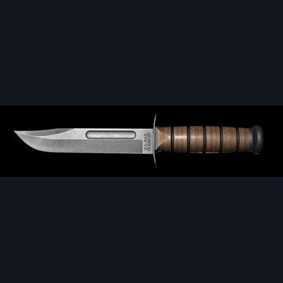 | KA-BAR USMC Fighter knife | Sans munition | None | None | None | None | None | — | 0 | 0 |
 | Kukri tactique United Cutlery M48 | Sans munition | None | None | None | None | None | — | 0 | 0 |
 | Labrys enchaînée | Sans munition | None | None | None | None | None | — | 0 | 0 |
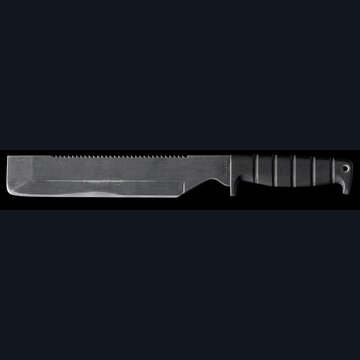 | Machette de survie SP-8 | Sans munition | None | None | None | None | None | — | 0 | 0 |
 | Machette de survie UVSR Taiga-1 | Sans munition | None | None | None | None | None | — | 0 | 0 |
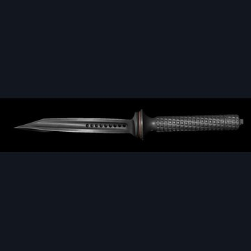 | Microtech Jagdkommando knife | Sans munition | None | None | None | None | None | — | 0 | 0 |
 | Miller Bros. Blades M-2 Tactical Sword (Brown) | Sans munition | None | None | None | None | None | — | 0 | 0 |
 | NKVD Finka knife | Sans munition | None | None | None | None | None | — | 0 | 0 |
| NKVD Finka knife | Sans munition | None | None | None | None | None | — | 0 | 0 |
 | Pelle MPL-50 | Sans munition | None | None | None | None | None | — | 0 | 0 |
 | Pied-de-biche Freeman | Sans munition | None | None | None | None | None | — | 0 | 0 |
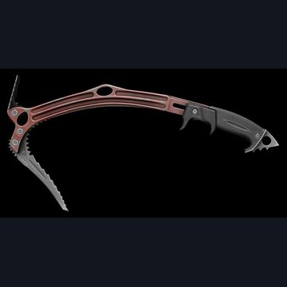 | Piolet Red Rebel | Sans munition | None | None | None | None | None | — | 0 | 0 |
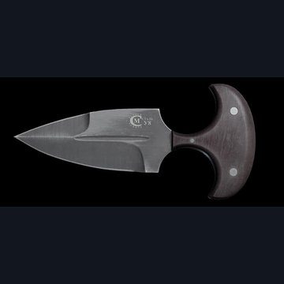 | Poignard à pousser Akula | Sans munition | None | None | None | None | None | — | 0 | 0 |
| Poignard à pousser Akula | Sans munition | None | None | None | None | None | — | 0 | 0 | |
 | Tomahawk tactique Kiba Arms | Sans munition | None | None | None | None | None | — | 0 | 0 |
 | Tomahawk tactique SOG Voodoo Hawk | Sans munition | None | None | None | None | None | — | 0 | 0 |
 | Épée tactique Miller Bros. Blades M-2 | Sans munition | None | None | None | None | None | — | 0 | 0 |
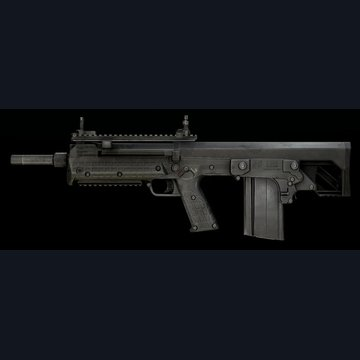 | Carabine d'assaut Kel-Tec RFB 7,62 x 51 mm | 7,62 x 51 mm NATO | 80 | 148 | 307 | 700 | 900 | Semi-automatique | 8 | 2 |
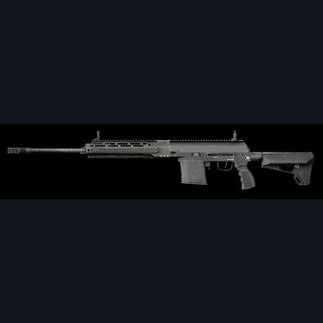 | Carabine d'assaut TKPD 9,3 x 64 mm | 9,3 x 64 mm | 40 | 493 | 1150 | 25 | 900 | Semi-automatique | 3 | 5 |
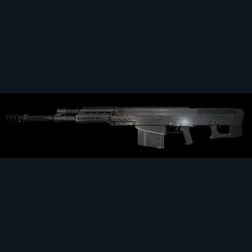 | Fusil de précision anti-matériel TheAKGuy AK-50 .50 BMG | 12,7 x 99 mm | 66 | 624 | 1163 | 30 | 1000 | Semi-automatique | 4 | 1 |
 | Fusil de précision semi-automatique HK G28 7,62 x 51 mm | 7,62 x 51 mm NATO | 48 | 146 | 400 | 700 | 900 | Semi-automatique | 8 | 2 |
 | Fusil de précision semi-automatique Knight's Armament Company SR-25 7,62 x 51 mm | 7,62 x 51 mm NATO | 47 | 155 | 356 | 700 | 900 | Semi-automatique | 8 | 4 |
 | Fusil de précision semi-automatique Knight's Armament Company SR-25 7,62 x 51 mm (Taupe) | 7,62 x 51 mm NATO | 47 | 155 | 356 | 700 | 900 | Semi-automatique | 8 | 1 |
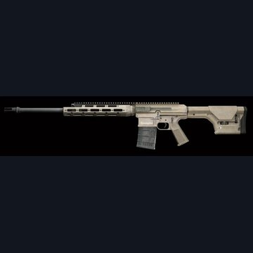 | Fusil de précision semi-automatique Remington R11 RSASS 7,62 x 51 mm | 7,62 x 51 mm NATO | 50 | 145 | 324 | 700 | 900 | Semi-automatique | 8 | 3 |
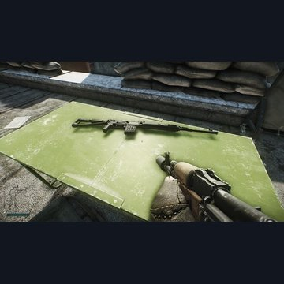 | Fusil de précision semi-automatique SVDS 7,62 x 54 mm R | 7,62 x 54 mm R | 47 | 220 | 647 | 700 | 900 | Semi-automatique | 9 | 3 |
 | Fusil de précision semi-automatique SWORD International Mk-18 .338 Lapua Magnum | 8,6 x 70 mm | 34 | 577 | 1241 | 30 | 900 | Semi-automatique | 4 | 4 |
 | Fusil de précision spécial VSS Vintorez 9 x 39 mm | 9 x 39 mm | 43 | 80 | 270 | 900 | 400 | Semi-automatique, Automatique | 6 | 3 |
 | Springfield Armory M1A 7,62 x 51 mm | 7,62 x 51 mm NATO | 28 | 214 | 405 | 700 | 700 | Semi-automatique | 8 | 5 |
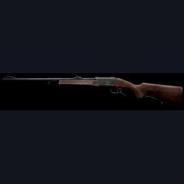 | Carabine monocoup MP-18 7,62 x 54 mm R | 7,62 x 54 mm R | 44 | 295 | 753 | 10 | 100 | Semi-automatique | 9 | 1 |
 | Fusil Benelli M3 Super 90 dual-mode calibre 12 | 12 gauges | 42 | 336 | 595 | 60 | 70 | Semi-automatique, semiauto | 17 | 3 |
 | Fusil automatique MPS Auto Assault-12 Gen 1 calibre 12 | 12 gauges | 43 | 175 | 235 | 330 | 70 | Semi-automatique, Automatique | 17 | 2 |
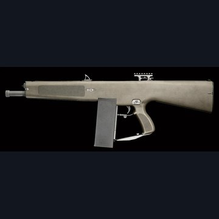 | Fusil automatique MPS Auto Assault-12 Gen 2 calibre 12 | 12 gauges | 45 | 173 | 232 | 330 | 70 | Semi-automatique, Automatique | 17 | 5 |
 | Fusil automatique Saiga-12K calibre 12/76 | 12 gauges | 30 | 298 | 526 | 450 | 70 | Semi-automatique, Automatique | 17 | 4 |
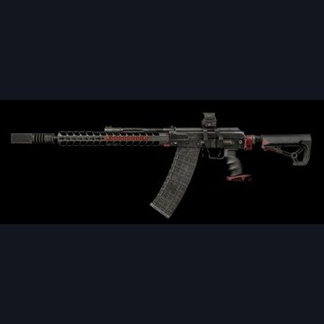 | Fusil automatique Saiga-12K calibre 12/76 (Redline) | 12 gauges | 35 | 298 | 526 | 450 | 70 | Semi-automatique, Automatique | 17 | 1 |
 | Fusil juxtaposé MP-43-1C calibre 12 | 12 gauges | 44 | 279 | 413 | 900 | 100 | Semi-automatique, doublet | 17 | 2 |
 | Fusil juxtaposé à canons sciés MP-43 calibre 12 | 12 gauges | 50 | 279 | 413 | 900 | 100 | Semi-automatique, doublet | 17 | 1 |
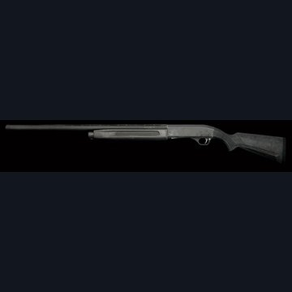 | Fusil semi-automatique MP-153 calibre 12 | 12 gauges | 43 | 348 | 474 | 40 | 70 | Semi-automatique | 17 | 1 |
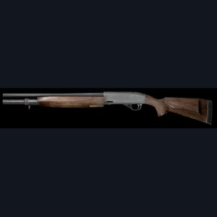 | Fusil semi-automatique MP-155 calibre 12 | 12 gauges | 48 | 341 | 457 | 40 | 70 | Semi-automatique | 17 | 2 |
 | Fusil semi-automatique Saiga-12K ver.10 calibre 12/76 | 12 gauges | 30 | 298 | 526 | 40 | 70 | Semi-automatique | 17 | 4 |
 | Fusil à pompe MP-133 calibre 12 | 12 gauges | 40 | 397 | 522 | 30 | 70 | Semi-automatique | 17 | 2 |
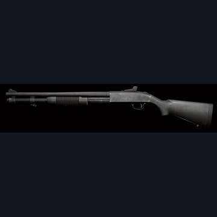 | Fusil à pompe Mossberg 590A1 calibre 12 | 12 gauges | 48 | 421 | 494 | 30 | 70 | Semi-automatique | 17 | 1 |
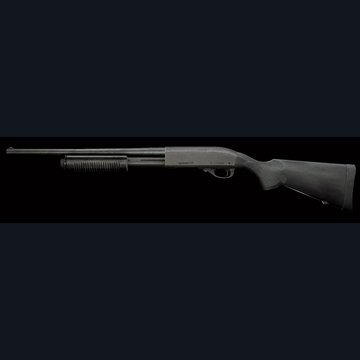 | Fusil à pompe Remington Model 870 calibre 12 | 12 gauges | 45 | 397 | 471 | 30 | 70 | Semi-automatique | 17 | 3 |
 | Fusil à pompe TOZ KS-23M 23 x 75 mm | 23 x 75 mm | 38 | 467 | 601 | 30 | 70 | Semi-automatique | 4 | 2 |
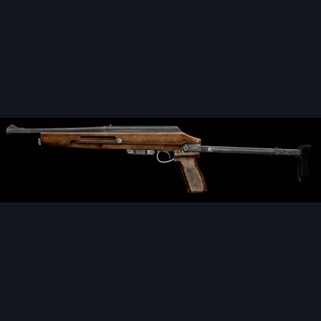 | Fusil à verrou TOZ-106 calibre 20 | 20 gauges | 60 | 663 | 585 | 30 | 70 | Semi-automatique | 11 | 1 |
 | Carabine ADAR 2-15 5,56 x 45 mm | 5,56 x 45 mm NATO | 48 | 120 | 344 | 800 | 500 | Semi-automatique | 11 | 2 |
 | Carabine Lone Star TX-15 DML 5,56 x 45 mm | 5,56 x 45 mm NATO | 50 | 101 | 289 | 800 | 500 | Semi-automatique | 11 | 2 |
 | Carabine Molot Arms VPO-136 "Vepr-KM" 7,62 x 39 mm | 7,62 x 39 mm | 30 | 149 | 378 | 600 | 400 | Semi-automatique | 9 | 1 |
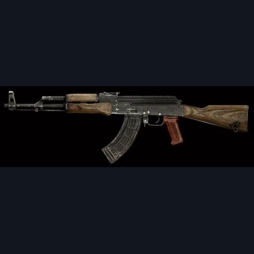 | Carabine Molot Arms VPO-209 .366 TKM | .366 TKM | 30 | 154 | 386 | 600 | 300 | Semi-automatique | 4 | 1 |
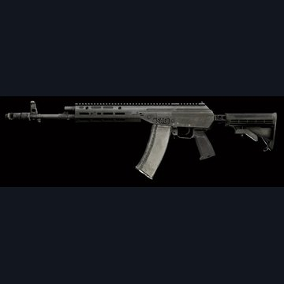 | Carabine SAG AK-545 5,45 x 39 mm | 5,45 x 39 mm | 50 | 91 | 263 | 650 | 650 | Semi-automatique | 13 | 1 |
 | Carabine SAG AK-545 Courte 5,45 x 39 mm | 5,45 x 39 mm | 53 | 93 | 270 | 650 | 650 | Semi-automatique | 13 | 1 |
 | Colt M16A1 5.56x45 assault rifle | 5,56 x 45 mm NATO | 48 | 121 | 346 | 800 | 500 | Semi-automatique, Automatique | 11 | 6 |
 | Colt M16A2 5.56x45 assault rifle | 5,56 x 45 mm NATO | 48 | 117 | 338 | 800 | 500 | Semi-automatique, Burst | 11 | 1 |
 | Custom Guns NL545 (DI) 5.45x39 assault rifle | 5,45 x 39 mm | 45 | 109 | 320 | 800 | 500 | Semi-automatique, Automatique | 13 | 2 |
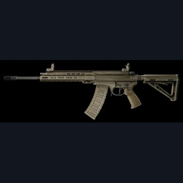 | Custom Guns NL545 (GP) 5.45x39 assault rifle | 5,45 x 39 mm | 48 | 114 | 330 | 850 | 500 | Semi-automatique, Automatique | 13 | 3 |
 | Fusil d'assaut AK-101 5,56 x 45 mm | 5,56 x 45 mm NATO | 35 | 98 | 248 | 650 | 650 | Semi-automatique, Automatique | 11 | 1 |
 | Fusil d'assaut AK-102 5,56 x 45 mm | 5,56 x 45 mm NATO | 43 | 103 | 280 | 600 | 650 | Semi-automatique, Automatique | 11 | 1 |
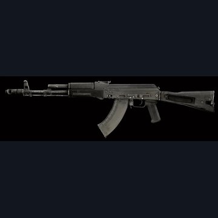 | Fusil d'assaut AK-103 7,62 x 39 mm | 7,62 x 39 mm | 35 | 118 | 295 | 600 | 650 | Semi-automatique, Automatique | 9 | 1 |
 | Fusil d'assaut AK-104 7,62 x 39 mm | 7,62 x 39 mm | 43 | 120 | 315 | 600 | 650 | Semi-automatique, Automatique | 9 | 3 |
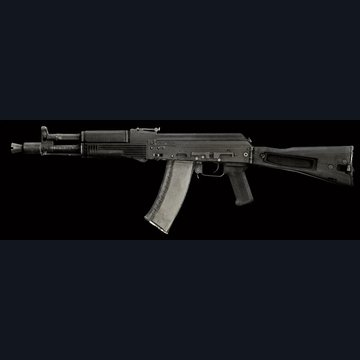 | Fusil d'assaut AK-105 5,45 x 39 mm | 5,45 x 39 mm | 43 | 100 | 277 | 600 | 650 | Semi-automatique, Automatique | 13 | 2 |
 | Fusil d'assaut AK-74N 5,45 x 39 mm | 5,45 x 39 mm | 31 | 96 | 244 | 650 | 650 | Semi-automatique, Automatique | 13 | 3 |
 | Fusil d'assaut ASh-12 12,7 x 55 mm | 12,7 x 55 mm | 55 | 128 | 425 | 650 | 650 | Semi-automatique, Automatique | 3 | 3 |
 | Fusil d'assaut Aklys Defense Velociraptor .300 AAC Blackout | 7,62 x 35 mm | 35 | 101 | 272 | 600 | 650 | Semi-automatique, Automatique | 6 | 1 |
 | Fusil d'assaut CMMG Mk47 Mutant 7,62 x 39 mm | 7,62 x 39 mm | 38 | 136 | 338 | 650 | 500 | Semi-automatique, Automatique | 9 | 3 |
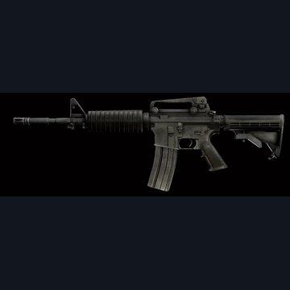 | Fusil d'assaut Colt M4A1 5,56 x 45 mm | 5,56 x 45 mm NATO | 48 | 119 | 342 | 800 | 500 | Semi-automatique, Automatique | 11 | 19 |
 | Fusil d'assaut DS Arms SA-58 7,62 x 51 mm | 7,62 x 51 mm NATO | 30 | 210 | 417 | 700 | 900 | Semi-automatique, Automatique | 8 | 8 |
 | Fusil d'assaut Desert Tech MDR 5,56 x 45 mm | 5,56 x 45 mm NATO | 67 | 79 | 260 | 650 | 500 | Semi-automatique, Automatique | 11 | 4 |
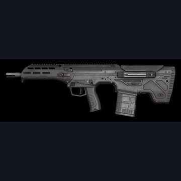 | Fusil d'assaut Desert Tech MDR 7,62 x 51 mm | 7,62 x 51 mm NATO | 67 | 125 | 310 | 650 | 500 | Semi-automatique, Automatique | 8 | 4 |
 | Fusil d'assaut FN SCAR-H 7,62 x 51 mm | 7,62 x 51 mm NATO | 45 | 200 | 505 | 600 | 500 | Semi-automatique, Automatique | 8 | 3 |
 | Fusil d'assaut FN SCAR-H 7,62 x 51 mm (FDE) | 7,62 x 51 mm NATO | 45 | 200 | 505 | 600 | 500 | Semi-automatique, Automatique | 8 | 5 |
 | Fusil d'assaut FN SCAR-H X-17 7,62 x 51 mm | 7,62 x 51 mm NATO | 47 | 200 | 505 | 600 | 500 | Semi-automatique, Automatique | 8 | 1 |
 | Fusil d'assaut FN SCAR-L 5,56 x 45 mm | 5,56 x 45 mm NATO | 45 | 90 | 280 | 650 | 500 | Semi-automatique, Automatique | 11 | 1 |
 | Fusil d'assaut FN SCAR-L 5,56 x 45 mm (FDE) | 5,56 x 45 mm NATO | 45 | 90 | 280 | 650 | 500 | Semi-automatique, Automatique | 11 | 3 |
 | Fusil d'assaut HK 416A5 5,56 x 45 mm | 5,56 x 45 mm NATO | 51 | 125 | 358 | 850 | 500 | Semi-automatique, Automatique | 11 | 1 |
 | Fusil d'assaut HK G36 5,56 x 45 mm | 5,56 x 45 mm NATO | 60 | 106 | 298 | 750 | 500 | Semi-automatique, Burst, Automatique | 11 | 8 |
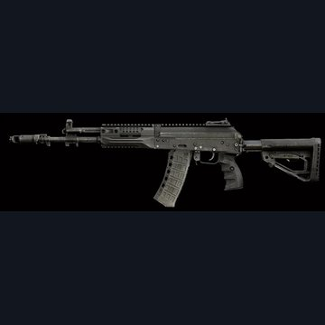 | Fusil d'assaut Kalashnikov AK-12 5,45 x 39 mm | 5,45 x 39 mm | 36 | 100 | 302 | 700 | 800 | Semi-automatique, Automatique, Burst | 13 | 5 |
 | Fusil d'assaut Kalashnikov AK-74 5,45 x 39 mm | 5,45 x 39 mm | 30 | 96 | 244 | 650 | 650 | Semi-automatique, Automatique | 13 | 3 |
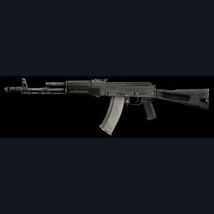 | Fusil d'assaut Kalashnikov AK-74M 5,45 x 39 mm | 5,45 x 39 mm | 33 | 95 | 241 | 650 | 650 | Semi-automatique, Automatique | 13 | 2 |
 | Fusil d'assaut Kalashnikov AKM 7,62 x 39 mm | 7,62 x 39 mm | 28 | 121 | 298 | 600 | 400 | Semi-automatique, Automatique | 9 | 6 |
 | Fusil d'assaut Kalashnikov AKMN 7,62 x 39 mm | 7,62 x 39 mm | 28 | 121 | 298 | 600 | 400 | Semi-automatique, Automatique | 9 | 2 |
 | Fusil d'assaut Kalashnikov AKMS 7,62 x 39 mm | 7,62 x 39 mm | 26 | 121 | 298 | 600 | 400 | Semi-automatique, Automatique | 9 | 3 |
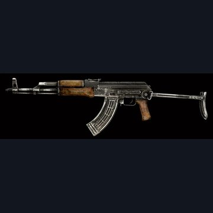 | Fusil d'assaut Kalashnikov AKMSN 7,62 x 39 mm | 7,62 x 39 mm | 26 | 121 | 298 | 600 | 400 | Semi-automatique, Automatique | 9 | 2 |
 | Fusil d'assaut Kalashnikov AKS-74N 5,45 x 39 mm | 5,45 x 39 mm | 32 | 90 | 244 | 650 | 650 | Semi-automatique, Automatique | 13 | 1 |
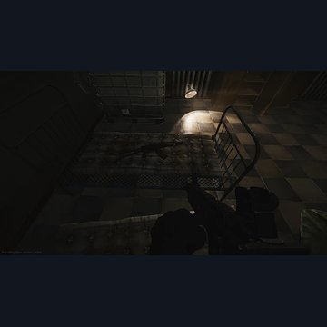 | Fusil d'assaut Kalashnikov AKS-74U 5,45 x 39 mm | 5,45 x 39 mm | 44 | 108 | 272 | 650 | 300 | Semi-automatique, Automatique | 13 | 2 |
 | Fusil d'assaut Kalashnikov AKS-74UB 5,45 x 39 mm | 5,45 x 39 mm | 44 | 108 | 272 | 650 | 300 | Semi-automatique, Automatique | 13 | 1 |
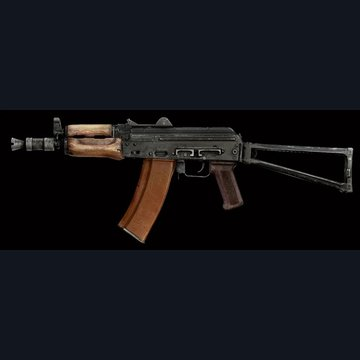 | Fusil d'assaut Kalashnikov AKS-74UN 5,45 x 39 mm | 5,45 x 39 mm | 44 | 108 | 272 | 650 | 300 | Semi-automatique, Automatique | 13 | 3 |
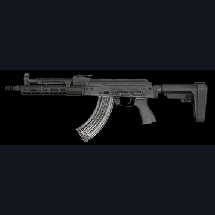 | Fusil d'assaut Rifle Dynamics RD-704 7,62 x 39 mm | 7,62 x 39 mm | 50 | 135 | 314 | 600 | 650 | Semi-automatique, Automatique | 9 | 2 |
 | Fusil d'assaut SIG MCX .300 AAC Blackout | 7,62 x 35 mm | 43 | 127 | 351 | 800 | 500 | Semi-automatique, Automatique | 6 | 4 |
 | Fusil d'assaut SIG MCX SPEAR 6,8 x 51 mm | 6,8 x 51 mm | 46 | 143 | 425 | 800 | 500 | Semi-automatique, Automatique | 2 | 4 |
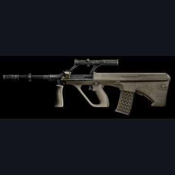 | Fusil d'assaut Steyr AUG A1 5,56 x 45 mm | 5,56 x 45 mm NATO | 95 | 90 | 265 | 715 | 500 | Semi-automatique, Automatique | 11 | 1 |
 | Fusil d'assaut Steyr AUG A3 5,56 x 45 mm | 5,56 x 45 mm NATO | 95 | 87 | 248 | 715 | 500 | Semi-automatique, Automatique | 11 | 3 |
 | Fusil d'assaut Steyr AUG A3 5,56 x 45 mm (noir) | 5,56 x 45 mm NATO | 95 | 87 | 248 | 715 | 500 | Semi-automatique, Automatique | 11 | 1 |
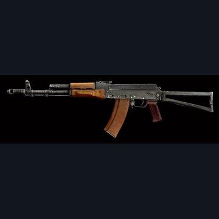 | Fusils d'assaut Kalashnikov AKS-74 5,45 x 39 mm | 5,45 x 39 mm | 31 | 90 | 244 | 650 | 650 | Semi-automatique, Automatique | 13 | 1 |
 | HK 416A5 5.56x45 assault rifle (RAL 8000) | 5,56 x 45 mm NATO | 51 | 125 | 358 | 850 | 500 | Semi-automatique, Automatique | 11 | 1 |
 | Howa Type 20 5.56x45 assault rifle | 5,56 x 45 mm NATO | 50 | 97 | 270 | 700 | 500 | Semi-automatique, Automatique | 11 | 1 |
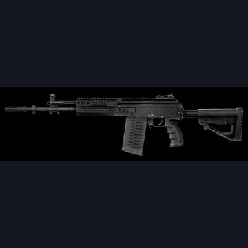 | Kalashnikov AK-308 7.62x51 assault rifle | 7,62 x 51 mm NATO | 33 | 152 | 325 | 700 | 800 | Semi-automatique, Automatique | 8 | 4 |
 | Norinco QBZ-191 5.8x42 assault rifle | 5,8 x 42 mm | 48 | 114 | 330 | 750 | 500 | Semi-automatique, Automatique | 4 | 2 |
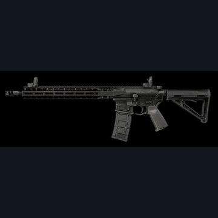 | Radian Weapons Model 1 FA 5.56x45 assault rifle | 5,56 x 45 mm NATO | 51 | 112 | 335 | 800 | 500 | Semi-automatique, Automatique | 11 | 1 |
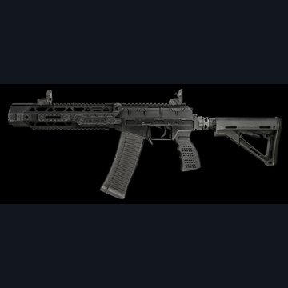 | AS VAL MOD.4 9x39 special assault rifle | 9 x 39 mm | 46 | 70 | 260 | 900 | 400 | Semi-automatique, Automatique | 6 | 3 |
 | Carabine KBP VSK-94 9 x 39 mm | 9 x 39 mm | 50 | 110 | 280 | 700 | 400 | Semi-automatique, Automatique | 6 | 2 |
 | Carabine Molot Arms Simonov OP-SKS 7,62 x 39 mm | 7,62 x 39 mm | 40 | 155 | 360 | 40 | 400 | Semi-automatique | 9 | 5 |
 | Carabine Molot Arms VPO-101 "Vepr-Hunter" 7,62 x 51 mm | 7,62 x 51 mm NATO | 29 | 150 | 585 | 600 | 400 | Semi-automatique | 8 | 2 |
 | Carabine TOZ Simonov SKS 7,62 x 39 mm | 7,62 x 39 mm | 40 | 155 | 360 | 40 | 400 | Semi-automatique | 9 | 2 |
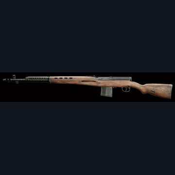 | Carabine Tokarev SVT-40 7,62 x 54 mm R | 7,62 x 54 mm R | 20 | 175 | 675 | 50 | 400 | Semi-automatique | 9 | 2 |
 | Carabine d'assaut KBP 9A-91 9 x 39 mm | 9 x 39 mm | 50 | 110 | 280 | 700 | 400 | Semi-automatique, Automatique | 6 | 2 |
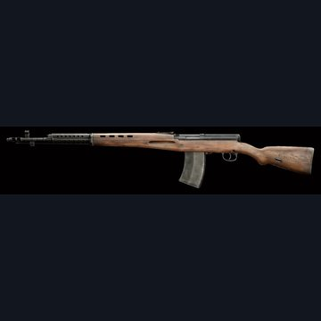 | Fusil automatique Tokarev AVT-40 7,62 x 54 mm R | 7,62 x 54 mm R | 20 | 175 | 675 | 750 | 400 | Semi-automatique, Automatique | 9 | 1 |
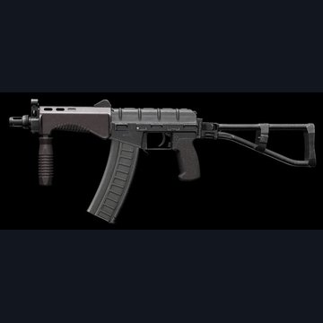 | Fusil d'assaut compact SR-3M 9 x 39 mm | 9 x 39 mm | 45 | 74 | 255 | 900 | 400 | Semi-automatique, Automatique | 6 | 2 |
 | Fusil d'assaut spécial AS VAL 9 x 39 mm | 9 x 39 mm | 43 | 80 | 270 | 900 | 400 | Semi-automatique, Automatique | 6 | 3 |
 | Carabine à levier de sous-garde Marlin MXLR .308 ME | 7,84 x 49 mm | 34 | 182 | 376 | 100 | 1000 | Semi-automatique | 2 | 1 |
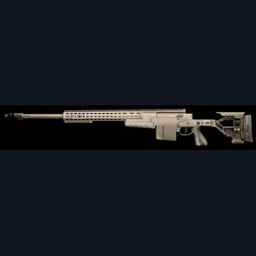 | Fusil de précision à verrou Accuracy International AXMC .338 LM | 8,6 x 70 mm | 21 | 468 | 972 | 30 | 1000 | Semi-automatique | 4 | 2 |
 | Fusil de précision à verrou Lobaev Arms DVL-10 7,62 x 51 mm | 7,62 x 51 mm NATO | 55 | 111 | 585 | 30 | 1000 | Semi-automatique | 8 | 4 |
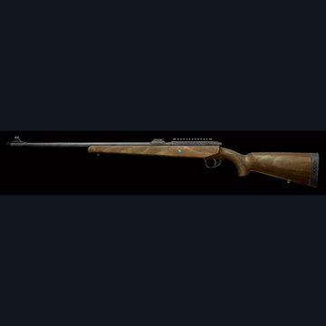 | Fusil de précision à verrou Molot Arms VPO-215 "Gornostay" .366 TKM | .366 TKM | 41 | 200 | 486 | 30 | 1000 | Semi-automatique | 4 | 1 |
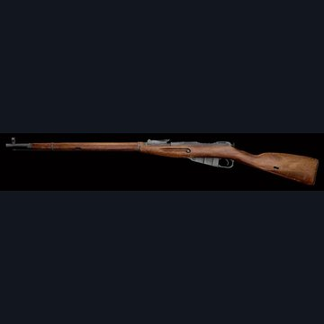 | Fusil de précision à verrou Mosin 7,62 x 54 mm R (infanterie) | 7,62 x 54 mm R | 30 | 288 | 877 | 30 | 1000 | Semi-automatique | 9 | 3 |
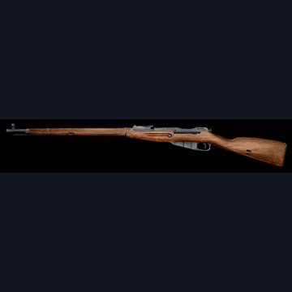 | Fusil de précision à verrou Mosin 7,62 x 54 mm R (sniper) | 7,62 x 54 mm R | 30 | 288 | 877 | 30 | 1000 | Semi-automatique | 9 | 6 |
 | Fusil de précision à verrou ORSIS T-5000 7,62 x 51 mm | 7,62 x 51 mm NATO | 35 | 141 | 567 | 30 | 1000 | Semi-automatique | 8 | 1 |
 | Fusil de précision à verrou Remington Model 700 7,62 x 51 mm | 7,62 x 51 mm NATO | 49 | 199 | 670 | 30 | 1000 | Semi-automatique | 8 | 8 |
| Fusil de précision à verrou SV-98 7,62 x 54 mm R | 7,62 x 54 mm R | 28 | 250 | 711 | 30 | 1000 | Semi-automatique | 9 | 2 | |
 | Fusil de précision à verrou Sako TRG M10 .338 LM | 8,6 x 70 mm | 25 | 428 | 924 | 30 | 1000 | Semi-automatique | 4 | 3 |
| Fusée de détresse à main ROP-30 (blanche) | 26 x 75 mm | 51 | 170 | 400 | 30 | 50 | Semi-automatique | 7 | 0 | |
| Fusée de détresse à main RSP-30 (bleue) | 26 x 75 mm | 51 | 170 | 400 | 30 | 50 | Semi-automatique | 7 | 0 | |
 | Fusée de détresse à main RSP-30 (feux d'artifice) | 26 x 75 mm | 51 | 170 | 400 | 30 | 50 | Semi-automatique | 7 | 0 |
 | Fusée de détresse à main RSP-30 (jaune spécial) | 26 x 75 mm | 51 | 170 | 400 | 30 | 50 | Semi-automatique | 7 | 0 |
 | Fusée de détresse à main RSP-30 (jaune) | 26 x 75 mm | 51 | 170 | 400 | 30 | 50 | Semi-automatique | 7 | 0 |
 | Fusée de détresse à main RSP-30 (rouge) | 26 x 75 mm | 51 | 170 | 400 | 30 | 50 | Semi-automatique | 7 | 0 |
 | Fusée de détresse à main RSP-30 (verte) | 26 x 75 mm | 51 | 170 | 400 | 30 | 50 | Semi-automatique | 7 | 0 |
| Lance-grenades FN40GL Mk2 40 mm | 4,0 x 46 mm | 51 | 230 | 460 | 30 | 50 | Semi-automatique | 6 | 1 | |
| Pistolet de détresse ZiD SP-81 26 x 75 mm | 26 x 75 mm | 51 | 170 | 400 | 30 | 50 | Semi-automatique | 5 | 0 | |
 | Lance-roquettes RShG-2 72,5mm | 7,25 x 25 mm | 39 | 180 | 150 | 30 | 50 | Semi-automatique | 1 | 1 |
| Fusil-mitrailleur Degtyarev RPD 7,62 x 39 mm | 7,62 x 39 mm | 45 | 107 | 502 | 700 | 800 | Automatique | 9 | 2 | |
| Fusil-mitrailleur Degtyarev RPDN 7,62 x 39 mm | 7,62 x 39 mm | 45 | 107 | 502 | 700 | 800 | Automatique | 9 | 4 | |
 | Fusil-mitrailleur Kalashnikov PKM 7,62 x 54 mm R | 7,62 x 54 mm R | 55 | 138 | 515 | 650 | 750 | Automatique | 9 | 3 |
 | Fusil-mitrailleur Kalashnikov PKP 7,62 x 54 mm R | 7,62 x 54 mm R | 55 | 138 | 515 | 650 | 750 | Automatique | 9 | 3 |
| Fusil-mitrailleur RPK-16 5,45 x 39 mm | 5,45 x 39 mm | 45 | 106 | 316 | 650 | 650 | Semi-automatique, Automatique | 13 | 3 | |
 | Fusil-mitrailleur U.S. Ordnance M60E4 7,62 x 51 mm | 7,62 x 51 mm NATO | 45 | 107 | 502 | 550 | 800 | Automatique | 8 | 1 |
 | Fusil-mitrailleur U.S. Ordnance M60E6 7,62 x 51 mm | 7,62 x 51 mm NATO | 45 | 107 | 502 | 550 | 800 | Automatique | 8 | 1 |
 | Fusil-mitrailleur U.S. Ordnance M60E6 7,62 x 51 mm (FDE) | 7,62 x 51 mm NATO | 45 | 107 | 502 | 550 | 800 | Automatique | 8 | 1 |
| Pistolet Beretta M9A3 9 x 19 mm | 9 x 19 mm Para | 70 | 404 | 280 | 30 | 50 | Semi-automatique | 9 | 1 | |
 | Pistolet Colt M1911A1 .45 ACP | 11,43 x 23 mm ACP | 75 | 451 | 355 | 30 | 50 | Semi-automatique | 5 | 1 |
 | Pistolet Colt M45A1 .45 ACP | 11,43 x 23 mm ACP | 78 | 438 | 325 | 30 | 50 | Semi-automatique | 5 | 2 |
 | Pistolet FN Five-seveN MK2 5,7 x 28 mm | 5,7 x 28 mm | 86 | 281 | 240 | 30 | 50 | Semi-automatique | 7 | 1 |
 | Pistolet FN Five-seveN MK2 5,7 x 28 mm (FDE) | 5,7 x 28 mm | 86 | 281 | 240 | 30 | 50 | Semi-automatique | 7 | 2 |
 | Pistolet Glock 17 9 x 19 mm | 9 x 19 mm Para | 90 | 311 | 260 | 30 | 50 | Semi-automatique | 9 | 10 |
 | Pistolet Glock 18C 9 x 19 mm | 9 x 19 mm Para | 90 | 306 | 286 | 1200 | 50 | Semi-automatique, Automatique | 9 | 2 |
| Pistolet Glock 19X 9 x 19 mm | 9 x 19 mm Para | 93 | 302 | 250 | 30 | 50 | Semi-automatique | 9 | 1 | |
| Pistolet HK USP .45 ACP | 11,43 x 23 mm ACP | 82 | 410 | 295 | 30 | 50 | Semi-automatique | 5 | 5 | |
| Pistolet Lebedev PL-15 9 x 19 mm | 9 x 19 mm Para | 93 | 289 | 235 | 30 | 50 | Semi-automatique | 9 | 1 | |
| Pistolet Magnum Research Desert Eagle L5 .357 Magnum | 9 x 33 mm R | 68 | 455 | 320 | 30 | 50 | Semi-automatique | 4 | 1 | |
| Pistolet Magnum Research Desert Eagle L5 .50 AE | 12,7 x 33 mm | 68 | 465 | 330 | 30 | 50 | Semi-automatique | 5 | 1 | |
 | Pistolet Magnum Research Desert Eagle L6 .50 AE | 12,7 x 33 mm | 64 | 465 | 330 | 30 | 50 | Semi-automatique | 5 | 1 |
 | Pistolet Magnum Research Desert Eagle L6 .50 AE (WTS) | 12,7 x 33 mm | 64 | 465 | 330 | 30 | 50 | Semi-automatique | 5 | 1 |
 | Pistolet Magnum Research Desert Eagle Mk XIX .50 AE | 12,7 x 33 mm | 64 | 465 | 330 | 30 | 50 | Semi-automatique | 5 | 1 |
 | Pistolet Makarov PM (f) 9 x 18 mm PM | 9 x 18 mm PM | 84 | 380 | 265 | 30 | 50 | Semi-automatique | 14 | 1 |
 | Pistolet Makarov PM 9 x 18 mm PM | 9 x 18 mm PM | 85 | 380 | 265 | 30 | 50 | Semi-automatique | 14 | 1 |
| Pistolet SIG P226R 9 x 19 mm | 9 x 19 mm Para | 80 | 383 | 275 | 30 | 50 | Semi-automatique | 9 | 2 | |
 | Pistolet Serdyukov SR-1MP Gyurza 9 x 21 mm | 9 x 21 mm | 82 | 442 | 325 | 30 | 50 | Semi-automatique | 6 | 3 |
 | Pistolet TT-33 7,62 x 25 mm | 7,62 x 25 mm TT | 70 | 553 | 325 | 30 | 50 | Semi-automatique | 10 | 2 |
 | Pistolet TT-33 7,62 x 25 mm (doré) | 7,62 x 25 mm TT | 70 | 553 | 325 | 30 | 50 | Semi-automatique | 10 | 1 |
| Pistolet Yarygin MP-443 "Grach" 9 x 19 mm | 9 x 19 mm Para | 75 | 425 | 310 | 30 | 50 | Semi-automatique | 9 | 1 | |
 | Pistolet automatique Stechkin APS 9 x 18 mm PM | 9 x 18 mm PM | 70 | 328 | 260 | 750 | 50 | Semi-automatique, Automatique | 14 | 1 |
| Pistolet automatique silencé APB 9 x 18 mm PM | 9 x 18 mm PM | 80 | 328 | 260 | 750 | 50 | Semi-automatique, Automatique | 14 | 1 | |
 | Pistolet en plastique 20 x 1 mm | 20 x 1 mm | 100 | 380 | 265 | 30 | 50 | Semi-automatique | 1 | 1 |
| Pistolet silencé PB 9 x 18 mm PM | 9 x 18 mm PM | 80 | 380 | 260 | 30 | 50 | Semi-automatique | 14 | 1 | |
 | Fusil MTs-255-12 calibre 12 | 12 gauges | 50 | 364 | 486 | 30 | 70 | Semi-automatique, doubleaction | 17 | 1 |
 | Lance-grenades M32A1 40 mm | 4,0 x 46 mm | 30 | 238 | 560 | 30 | 70 | Semi-automatique | 7 | 2 |
 | Revolver Chiappa Rhino 200DS 9 x 19 mm | 9 x 19 mm Para | 95 | 306 | 200 | 30 | 70 | Semi-automatique, doubleaction | 9 | 1 |
 | Revolver Chiappa Rhino 50DS .357 Magnum | 9 x 33 mm R | 80 | 383 | 280 | 30 | 70 | Semi-automatique, doubleaction | 4 | 2 |
| Revolver RSh-12 12,7 x 55 mm | 12,7 x 55 mm | 40 | 493 | 340 | 30 | 70 | Semi-automatique, doubleaction | 3 | 2 | |
| Carabine Saiga-9 9 x 19 mm | 9 x 19 mm Para | 32 | 42 | 246 | 650 | 300 | Semi-automatique | 9 | 1 | |
| Carabine Soyuz-TM STM-9 Gen.2 9 x 19 mm | 9 x 19 mm Para | 50 | 45 | 226 | 800 | 500 | Semi-automatique | 9 | 2 | |
 | FN P90 5.7x28 submachine gun (Scourge) | 5,7 x 28 mm | 59 | 57 | 255 | 910 | 200 | Semi-automatique, Automatique | 7 | 1 |
 | Pistolet-mitrailleur B&T MP9 9 x 19 mm | 9 x 19 mm Para | 75 | 54 | 254 | 900 | 200 | Semi-automatique, Automatique | 9 | 1 |
 | Pistolet-mitrailleur B&T MP9-N 9 x 19 mm | 9 x 19 mm Para | 75 | 51 | 254 | 1100 | 200 | Semi-automatique, Automatique | 9 | 2 |
| Pistolet-mitrailleur FN P90 5,7 x 28 mm | 5,7 x 28 mm | 60 | 54 | 243 | 900 | 200 | Semi-automatique, Automatique | 7 | 5 | |
| Pistolet-mitrailleur HK MP5 9 x 19 mm (navy, rafale 3 coups) | 9 x 19 mm Para | 50 | 56 | 275 | 800 | 200 | Semi-automatique, Burst, Automatique | 9 | 7 | |
 | Pistolet-mitrailleur HK MP5K 9 x 19 mm | 9 x 19 mm Para | 55 | 57 | 267 | 900 | 200 | Semi-automatique, Burst, Automatique | 9 | 1 |
 | Pistolet-mitrailleur HK MP7A1 4,6 x 30 mm | 4,6 x 30 mm | 65 | 50 | 178 | 950 | 200 | Semi-automatique, Automatique | 5 | 3 |
| Pistolet-mitrailleur HK MP7A2 4,6 x 30 mm | 4,6 x 30 mm | 65 | 50 | 178 | 950 | 200 | Semi-automatique, Automatique | 5 | 2 | |
 | Pistolet-mitrailleur HK UMP .45 ACP | 11,43 x 23 mm ACP | 62 | 72 | 240 | 600 | 200 | Semi-automatique, Automatique | 5 | 1 |
| Pistolet-mitrailleur IWI UZI 9 x 19 mm | 9 x 19 mm Para | 65 | 54 | 254 | 600 | 200 | Semi-automatique, Automatique | 9 | 3 | |
 | Pistolet-mitrailleur IWI UZI PRO Pistol 9 x 19 mm | 9 x 19 mm Para | 73 | 59 | 203 | 1075 | 100 | Semi-automatique, Automatique | 9 | 3 |
 | Pistolet-mitrailleur IWI UZI PRO SMG 9 x 19 mm | 9 x 19 mm Para | 78 | 56 | 198 | 1075 | 100 | Semi-automatique, Automatique | 9 | 1 |
 | Pistolet-mitrailleur PP-19-01 "Vityaz" 9 x 19 mm | 9 x 19 mm Para | 35 | 58 | 270 | 700 | 200 | Semi-automatique, Automatique | 9 | 5 |
 | Pistolet-mitrailleur PP-9 "Klin" 9 x 18 mm PMM | 9 x 18 mm PMM | 65 | 50 | 211 | 1000 | 100 | Semi-automatique, Automatique | 14 | 1 |
 | Pistolet-mitrailleur PP-91 "Kedr" 9 x 18 mm PM | 9 x 18 mm PM | 65 | 50 | 211 | 900 | 100 | Semi-automatique, Automatique | 13 | 1 |
 | Pistolet-mitrailleur PP-91-01 "Kedr-B" 9 x 18 mm PM | 9 x 18 mm PM | 65 | 50 | 211 | 900 | 100 | Semi-automatique, Automatique | 13 | 1 |
 | Pistolet-mitrailleur PPSh-41 7,62 x 25 mm | 7,62 x 25 mm TT | 16 | 89 | 294 | 1000 | 200 | Semi-automatique, Automatique | 10 | 1 |
| Pistolet-mitrailleur SIG MPX 9 x 19 mm | 9 x 19 mm Para | 40 | 51 | 269 | 850 | 500 | Semi-automatique, Automatique | 9 | 6 | |
 | Pistolet-mitrailleur SR-2M "Veresk" 9 x 21 mm | 9 x 21 mm | 59 | 54 | 234 | 950 | 200 | Semi-automatique, Automatique | 6 | 4 |
 | Pistolet-mitrailleur TDI KRISS Vector Gen.2 .45 ACP | 11,43 x 23 mm ACP | 65 | 59 | 356 | 1100 | 200 | Semi-automatique, Burst, Automatique | 5 | 1 |
 | Pistolet-mitrailleur TDI KRISS Vector Gen.2 9 x 19 mm | 9 x 19 mm Para | 65 | 48 | 315 | 950 | 200 | Semi-automatique, Burst, Automatique | 9 | 1 |
Comparer trois armes
Le comparateur oppose trois entrées ligne à ligne, sur les mêmes mesures et au même instantané. Il sert à trancher une question précise — « entre ce fusil à 900 de cadence et celui à 700, lequel est le plus docile ? » — et non à déclarer un vainqueur universel.
Sélectionnez jusqu’à trois armes.
| Indicateur |
|---|
Sélections guidées par les données
Quatre classements calculés directement sur l’export, sans intervention éditoriale. Ils répondent à des questions de gestion — quelle arme est la plus maniable, laquelle encaisse le mieux, laquelle tient le plus longtemps — mais ils ne disent rien de la qualité de la munition, qui décide du résultat d’un duel.
Ergonomie la plus haute
L’ergonomie conditionne la vitesse de visée et la manipulation. À configuration de base, huit armes dépassent le seuil affiché ci-dessous.
| Image | Arme | Calibre | Ergonomie | Recul vertical | Recul horizontal | Cadence (c/min) | Distance efficace (m) | Modes de tir | Munitions | Presets |
|---|---|---|---|---|---|---|---|---|---|---|
| Pistolet en plastique 20 x 1 mm | 20 x 1 mm | 100 | 380 | 265 | 30 | 50 | Semi-automatique | 1 | 1 |
| Fusil d'assaut Steyr AUG A1 5,56 x 45 mm | 5,56 x 45 mm NATO | 95 | 90 | 265 | 715 | 500 | Semi-automatique, Automatique | 11 | 1 | |
| Fusil d'assaut Steyr AUG A3 5,56 x 45 mm | 5,56 x 45 mm NATO | 95 | 87 | 248 | 715 | 500 | Semi-automatique, Automatique | 11 | 3 |
| Fusil d'assaut Steyr AUG A3 5,56 x 45 mm (noir) | 5,56 x 45 mm NATO | 95 | 87 | 248 | 715 | 500 | Semi-automatique, Automatique | 11 | 1 |
| Revolver Chiappa Rhino 200DS 9 x 19 mm | 9 x 19 mm Para | 95 | 306 | 200 | 30 | 70 | Semi-automatique, doubleaction | 9 | 1 |
| Pistolet Glock 19X 9 x 19 mm | 9 x 19 mm Para | 93 | 302 | 250 | 30 | 50 | Semi-automatique | 9 | 1 | |
| Pistolet Lebedev PL-15 9 x 19 mm | 9 x 19 mm Para | 93 | 289 | 235 | 30 | 50 | Semi-automatique | 9 | 1 | |
| Pistolet Glock 17 9 x 19 mm | 9 x 19 mm Para | 90 | 311 | 260 | 30 | 50 | Semi-automatique | 9 | 10 |
Recul vertical le plus faible
À l’inverse, le recul vertical détermine l’amplitude du premier et du second tir. Ces huit armes sont les plus dociles à configuration nue.
| Image | Arme | Calibre | Ergonomie | Recul vertical | Recul horizontal | Cadence (c/min) | Distance efficace (m) | Modes de tir | Munitions | Presets |
|---|---|---|---|---|---|---|---|---|---|---|
| Carabine Saiga-9 9 x 19 mm | 9 x 19 mm Para | 32 | 42 | 246 | 650 | 300 | Semi-automatique | 9 | 1 | |
| Carabine Soyuz-TM STM-9 Gen.2 9 x 19 mm | 9 x 19 mm Para | 50 | 45 | 226 | 800 | 500 | Semi-automatique | 9 | 2 | |
| Pistolet-mitrailleur TDI KRISS Vector Gen.2 9 x 19 mm | 9 x 19 mm Para | 65 | 48 | 315 | 950 | 200 | Semi-automatique, Burst, Automatique | 9 | 1 |
| Pistolet-mitrailleur HK MP7A1 4,6 x 30 mm | 4,6 x 30 mm | 65 | 50 | 178 | 950 | 200 | Semi-automatique, Automatique | 5 | 3 |
| Pistolet-mitrailleur HK MP7A2 4,6 x 30 mm | 4,6 x 30 mm | 65 | 50 | 178 | 950 | 200 | Semi-automatique, Automatique | 5 | 2 | |
| Pistolet-mitrailleur PP-9 "Klin" 9 x 18 mm PMM | 9 x 18 mm PMM | 65 | 50 | 211 | 1000 | 100 | Semi-automatique, Automatique | 14 | 1 |
| Pistolet-mitrailleur PP-91 "Kedr" 9 x 18 mm PM | 9 x 18 mm PM | 65 | 50 | 211 | 900 | 100 | Semi-automatique, Automatique | 13 | 1 |
| Pistolet-mitrailleur PP-91-01 "Kedr-B" 9 x 18 mm PM | 9 x 18 mm PM | 65 | 50 | 211 | 900 | 100 | Semi-automatique, Automatique | 13 | 1 |
Cadence la plus élevée
La cadence est le nombre de coups par minute publishés par le jeu. Elle fait le volume de feu, pas la précision : une cadence de 900 avec un recul vertical de 210 reste une arme difficile.
| Image | Arme | Calibre | Ergonomie | Recul vertical | Recul horizontal | Cadence (c/min) | Distance efficace (m) | Modes de tir | Munitions | Presets |
|---|---|---|---|---|---|---|---|---|---|---|
| Pistolet Glock 18C 9 x 19 mm | 9 x 19 mm Para | 90 | 306 | 286 | 1200 | 50 | Semi-automatique, Automatique | 9 | 2 |
| Pistolet-mitrailleur B&T MP9-N 9 x 19 mm | 9 x 19 mm Para | 75 | 51 | 254 | 1100 | 200 | Semi-automatique, Automatique | 9 | 2 |
| Pistolet-mitrailleur TDI KRISS Vector Gen.2 .45 ACP | 11,43 x 23 mm ACP | 65 | 59 | 356 | 1100 | 200 | Semi-automatique, Burst, Automatique | 5 | 1 |
| Pistolet-mitrailleur IWI UZI PRO Pistol 9 x 19 mm | 9 x 19 mm Para | 73 | 59 | 203 | 1075 | 100 | Semi-automatique, Automatique | 9 | 3 |
| Pistolet-mitrailleur IWI UZI PRO SMG 9 x 19 mm | 9 x 19 mm Para | 78 | 56 | 198 | 1075 | 100 | Semi-automatique, Automatique | 9 | 1 |
| Pistolet-mitrailleur PP-9 "Klin" 9 x 18 mm PMM | 9 x 18 mm PMM | 65 | 50 | 211 | 1000 | 100 | Semi-automatique, Automatique | 14 | 1 |
| Pistolet-mitrailleur PPSh-41 7,62 x 25 mm | 7,62 x 25 mm TT | 16 | 89 | 294 | 1000 | 200 | Semi-automatique, Automatique | 10 | 1 |
| Pistolet-mitrailleur HK MP7A1 4,6 x 30 mm | 4,6 x 30 mm | 65 | 50 | 178 | 950 | 200 | Semi-automatique, Automatique | 5 | 3 |
Distance efficace la plus longue
La distance efficace publiée indique la portée à laquelle l’arme reste pleinement précise selon le jeu. C’est une mesure de catalogue, pas une garantie de tir réussi.
| Image | Arme | Calibre | Ergonomie | Recul vertical | Recul horizontal | Cadence (c/min) | Distance efficace (m) | Modes de tir | Munitions | Presets |
|---|---|---|---|---|---|---|---|---|---|---|
| Carabine à levier de sous-garde Marlin MXLR .308 ME | 7,84 x 49 mm | 34 | 182 | 376 | 100 | 1000 | Semi-automatique | 2 | 1 |
| Fusil de précision anti-matériel TheAKGuy AK-50 .50 BMG | 12,7 x 99 mm | 66 | 624 | 1163 | 30 | 1000 | Semi-automatique | 4 | 1 | |
| Fusil de précision à verrou Accuracy International AXMC .338 LM | 8,6 x 70 mm | 21 | 468 | 972 | 30 | 1000 | Semi-automatique | 4 | 2 | |
| Fusil de précision à verrou Lobaev Arms DVL-10 7,62 x 51 mm | 7,62 x 51 mm NATO | 55 | 111 | 585 | 30 | 1000 | Semi-automatique | 8 | 4 |
| Fusil de précision à verrou Molot Arms VPO-215 "Gornostay" .366 TKM | .366 TKM | 41 | 200 | 486 | 30 | 1000 | Semi-automatique | 4 | 1 | |
| Fusil de précision à verrou Mosin 7,62 x 54 mm R (infanterie) | 7,62 x 54 mm R | 30 | 288 | 877 | 30 | 1000 | Semi-automatique | 9 | 3 | |
| Fusil de précision à verrou Mosin 7,62 x 54 mm R (sniper) | 7,62 x 54 mm R | 30 | 288 | 877 | 30 | 1000 | Semi-automatique | 9 | 6 | |
| Fusil de précision à verrou ORSIS T-5000 7,62 x 51 mm | 7,62 x 51 mm NATO | 35 | 141 | 567 | 30 | 1000 | Semi-automatique | 8 | 1 |
Ce que ces classements ne couvrent pas. Ils portent sur l’arme nue. Une fois montée, une arme peut changer de position dans ces classements : c’est précisément l’objet des presets publiés, dont les mesures figurent sur chaque fiche de famille. Et aucune de ces listes ne dit quelle munition est la bonne : pour cela, il faut la page sur la balistique.
Sources et limites
Les chiffres viennent de l’export communautaire du jeu, relevé le 18 novembre 2026, et de la règle de pénétration publiée par l’éditeur dans le correctif 0.14.6.0. Les retours de joueurs sont signalés comme tels et ne sont jamais utilisés comme source de chiffres.
- Tarkov.dev — catalogue des armes et de leurs presetsDonnées communautaires
- Tarkov.dev — items, équipement, munitions et skills (PvP ; autres modes via le catalogue)Données communautaires
- Tarkov.dev — catalogue officiel des exports JSONDonnées communautaires
- Escape from Tarkov WikiWiki communautaire
- KappaGuide — outils, cartes et guidesOutil communautaire
- Patch 0.14.6.0 — refonte de la pénétration (25 avril 2024)Éditeur
- How Armor Works in Tarkov — classes, plaques, pénétrationGuide communautaire